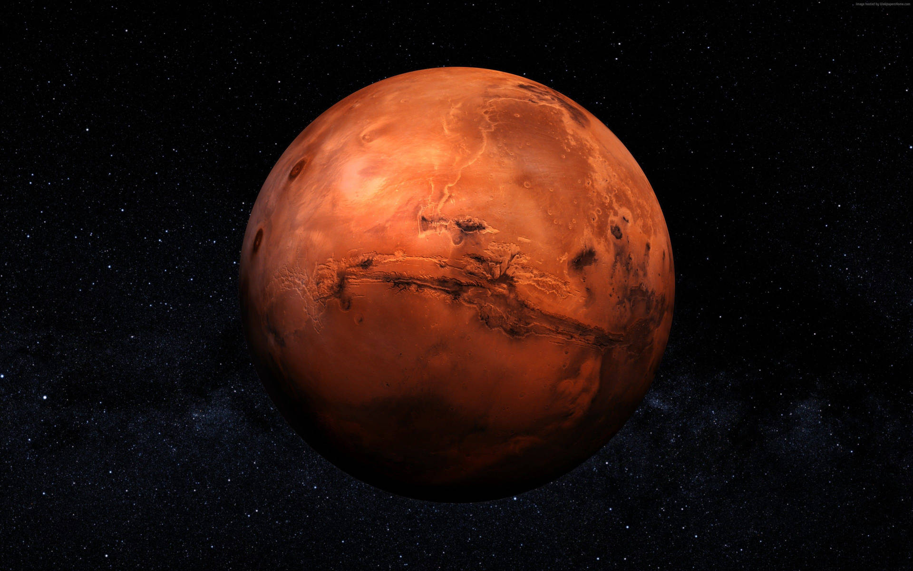

Mars

- The Mars
-
Mars is a cold desert world. It is half the size of Earth.
Mars is sometimes called the Red Planet. It's red because of rusty iron in the ground.
-
Like Earth, Mars has seasons, polar ice caps, volcanoes, canyons, and weather.
It has a very thin atmosphere made of carbon dioxide, nitrogen, and argon.
-
There are signs of ancient floods on Mars, but now water mostly exists in icy dirt and thin clouds.
On some Martian hillsides, there is evidence of liquid salty water in the ground.
-
Scientists want to know if Mars may have had living things in the past.
They also want to know if Mars could support life now or in the future.
- Planet Type
- Mars is a terrestrial planet. It is small and rocky.
- Moons
- Orbital Period
- One year on Mars is 687 Earth days.
- Rotation
- One day on Mars lasts 24.6 hours.
- Diameter
- Mass
- Volume
- Composition/Structure
-
It's made of iron, nickel, and sulfur.
-
Surrounding the core is a rocky mantle between 770 and 1,170 miles (1,240 to 1,880 kilometers) thick,
and above that, a crust made of iron, magnesium, aluminum, calcium, and potassium.
-
This crust is between 6 and 30 miles (10 to 50 kilometers) deep.
- Temperature
-
The temperature on Mars can be as high as 70 degrees Fahrenheit (20 degrees Celsius)
or as low as about -225 degrees Fahrenheit (-153 degrees Celsius)
- Facts
- Mars is named after the Roman god of war.
- Mars has 2 moons called Deimos and Phobos. They are named after the two horses that pull the Roman god of war, Mars’, chariot. They may be asteroids captured by Mars’ gravity.
- Mars is smaller than Earth with a diameter of 4217 miles. This makes it the second smallest planet in our solar system.
- Mars has a thin atmosphere made from 95.9% carbon dioxide and 2.7% nitrogen. The atmosphere is so thin that it’s not thick enough to trap the sun’s heat so it is very cold
- Mars has very weak gravity. Gravity on Mars is 37% less than on Earth. This means that on Mars you could jump 3x higher than on Earth.
- The biggest crater on Mars is Borealis Basin. It is 5300 miles from end to end and covers 40% of planet’s surface.
- Mars has the largest canyon in our solar system, Valles Marineris. It is 4 miles deep and stretches thousands of miles long.
- There is no evidence of life on Mars. However, it is the planet with the best conditions to support life and scientists believe there is potential for life under the surface of mars because they recently found water ice just under the surface.
- References